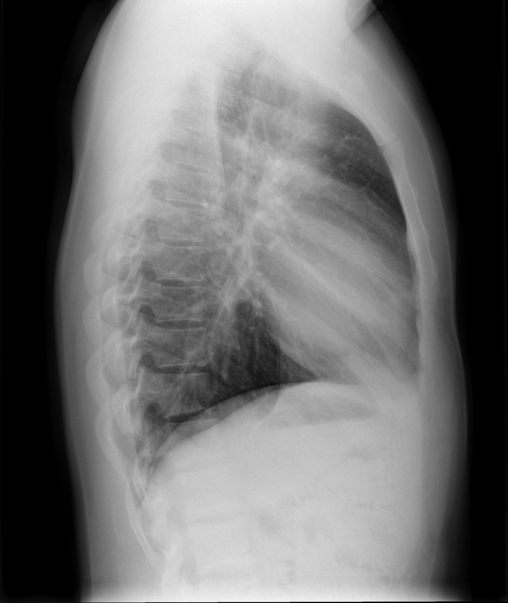

Chest الصدر · الأشعة السينية
للتعلّم فقط، وليس للتشخيص.
🟢 Normal الصورة الطبيعية Normal chest X-ray (PA) صورة صدر طبيعية (خلفية أمامية) 🟢 Normal · الصورة الطبيعية 1 2 3 4 5 6 7 8 9 10 Case courtesy of Liz Silverstone, Radiopaedia.org, rID: 231508 · CC BY-NC-SA 3.0 Medial end of right clavicle النهاية الإنسية للترقوة اليمنىMedial end of left clavicle النهاية الإنسية للترقوة اليسرىSpinous process الناتئ الشوكيOssified 1st costochondral junction (right) تعظّم الوصل الضلعي الغضروفي الأول (يمين)Ossified 1st costochondral junction (left) تعظّم الوصل الضلعي الغضروفي الأول (يسار)Right chest wall (soft tissue) جدار الصدر الأيمن (الأنسجة الرخوة)Left chest wall (soft tissue) جدار الصدر الأيسر (الأنسجة الرخوة)Lung vessels in posterior costophrenic recess أوعية الرئة بالزاوية الضلعية الحجابية الخلفيةGas in gastric fundus هواء بقاع المعدةGas in splenic flexure هواء بالثنية الطحالية للقولونالحالة: صورة صدر طبيعية لبالغ بالإسقاط الخلفي الأمامي (PA)، نقارن بيها كل الحالات.
ما يُرى فيها: الرئتان سوداوان متناظرتان، وظل القلب (cardiac silhouette) أقل من نصف عرض الصدر، والزاويتان الضلعيتان الحجابيتان (costophrenic angles) حادّتان.
الوضعية: PA chest (erect)
👁️ Show sign · وين العلامة؟
Normal chest X-ray (lateral) صورة صدر طبيعية (جانبية) 🟢 Normal · الصورة الطبيعية 
1 2 3 4 5 6 7 8 9 10 11 12 13 14 15 Case courtesy of Craig Hacking, Radiopaedia.org, rID: 40794 · CC BY-NC-SA 3.0 Arm soft tissue الأنسجة الرخوة للذراعScapula لوح الكتفAscending aorta الأبهر الصاعدDescending aorta الأبهر النازلTrachea الرغامى (القصبة الهوائية)Sternum عظم القصRight upper lobe bronchus قصبة الفص العلوي الأيمنLeft upper lobe bronchus قصبة الفص العلوي الأيسرRight pulmonary artery الشريان الرئوي الأيمنLeft pulmonary artery الشريان الرئوي الأيسرOesophagus المريءRight hemidiaphragm الحجاب الحاجز الأيمنLeft atrium الأذين الأيسرLeft ventricle البطين الأيسرInferior vena cava الوريد الأجوف السفليالحالة: صورة صدر جانبية طبيعية لبالغ، تكمّل الصورة الأمامية.
ما يُرى فيها: المسافة خلف القص (retrosternal space) وخلف القلب سوداء، والفقرات الصدرية تصبح أغمق كلما نزلنا للأسفل.
الوضعية: Left lateral chest (erect)
👁️ Show sign · وين العلامة؟
🦴 Fractures كسور Rib fractures كسور الأضلاع 🦴 Fractures · كسور Sjoehest · CC BY-SA 4.0 · Wikimedia Commons الحالة: كسر في ضلع أو أكثر، غالباً بعد ضربة أو سقوط.
علامتها بالأشعة: انقطاع في حافة الضلع (cortical break) أو تزحزح طرفيه؛ ابحث معه عن استرواح الصدر (pneumothorax) وهواء تحت الجلد.
الوضعية: Chest (erect) · Rib series / oblique ribs (Bontrager) عند الحاجة
🔁 Compare with normal · قارن بالطبيعي
🟢 صورة صدر طبيعية (خلفية أمامية) Normal chest X-ray (PA)
Case courtesy of Liz Silverstone, Radiopaedia.org, rID: 231508 · CC BY-NC-SA 3.0 🫁 Lungs & pleura الرئة والجنب Pneumothorax استرواح الصدر 🫁 Lungs & pleura · الرئة والجنب Hellerhoff · CC BY-SA 3.0 · Wikimedia Commons الحالة: هواء في الحيّز الجنبي (pleural space) يفصل الرئة عن جدار الصدر.
علامتها بالأشعة: خطّ الجنب الحشوي (visceral pleural line) رفيع وواضح، وخارجه لا تظهر علامات رئوية (absent lung markings).
الوضعية: PA chest (erect) · صورة PA بالزفير (expiration) أو Lateral decubitus (الجهة المصابة للأعلى) إذا تعذّر الوقوف
👁️ Show sign · وين العلامة؟ 🔁 Compare with normal · قارن بالطبيعي
🟢 صورة صدر طبيعية (خلفية أمامية) Normal chest X-ray (PA)
Case courtesy of Liz Silverstone, Radiopaedia.org, rID: 231508 · CC BY-NC-SA 3.0 Pleural effusion الانصباب الجنبي 🫁 Lungs & pleura · الرئة والجنب James Heilman, MD · CC BY-SA 3.0 · Wikimedia Commons الحالة: تجمّع سائل في الحيّز الجنبي بين الرئة وجدار الصدر.
علامتها بالأشعة: عتامة متجانسة في أسفل الصدر تطمس الزاوية الضلعية الحجابية (costophrenic angle)، وحافتها العليا مقعّرة على شكل هلال (meniscus sign).
الوضعية: PA chest (erect) · Lateral decubitus (الجهة المصابة للأسفل) لإظهار السائل القليل؛ وLateral erect
🔁 Compare with normal · قارن بالطبيعي
🟢 صورة صدر طبيعية (خلفية أمامية) Normal chest X-ray (PA)
Case courtesy of Liz Silverstone, Radiopaedia.org, rID: 231508 · CC BY-NC-SA 3.0 Tension pneumothorax استرواح الصدر الضاغط 🫁 Lungs & pleura · الرئة والجنب Hellerhoff · CC BY-SA 4.0 · Wikimedia Commons الحالة: استرواح يزداد فيه ضغط الهواء فيدفع القلب والمنصف (mediastinum) إلى الجهة الأخرى؛ حالة طارئة.
علامتها بالأشعة: رئة منكمشة مع انزياح المنصف والقصبة الهوائية (mediastinal shift) بعيداً عن الجهة المصابة، وانخفاض الحجاب الحاجز في جهتها.
الوضعية: PA chest (erect) · حالة طارئة: يُعالَج غالباً قبل التصوير؛ الصورة تُؤخذ بسرعة بالوضعية المتاحة
🔁 Compare with normal · قارن بالطبيعي
🟢 صورة صدر طبيعية (خلفية أمامية) Normal chest X-ray (PA)
Case courtesy of Liz Silverstone, Radiopaedia.org, rID: 231508 · CC BY-NC-SA 3.0 COPD / Hyperinflation (emphysema) الانسداد الرئوي المزمن / فرط انتفاخ الرئة 🫁 Lungs & pleura · الرئة والجنب Hellerhoff · CC BY-SA 4.0 · Wikimedia Commons الحالة: مرض مزمن تحبس فيه الرئتان الهواء فيزداد حجمهما (hyperinflation).
علامتها بالأشعة: رئتان كبيرتان شديدتا السواد، وحجاب حاجز مسطّح (flattened diaphragm) ينزل تحت الضلع الأمامي السادس، وقلب طويل ضيّق.
الوضعية: PA chest (erect) · Lateral لإظهار اتساع المسافة خلف القص (retrosternal space)
🔁 Compare with normal · قارن بالطبيعي
🟢 صورة صدر طبيعية (خلفية أمامية) Normal chest X-ray (PA)
Case courtesy of Liz Silverstone, Radiopaedia.org, rID: 231508 · CC BY-NC-SA 3.0 Pulmonary nodule / Mass عقدة / كتلة رئوية 🫁 Lungs & pleura · الرئة والجنب Case courtesy of Ian Bickle, Radiopaedia.org, rID: 83778 · CC BY-NC-SA 3.0 الحالة: ظلّ مستدير داخل الرئة؛ يسمّى عقدة (nodule) إذا كان ≤ 3 سم وكتلة (mass) إذا كان أكبر.
علامتها بالأشعة: عتامة مستديرة أو بيضوية محدّدة داخل الحقل الرئوي، تختلف عن الأوعية الدموية بأنها لا تتفرّع.
الوضعية: Frontal chest · Lateral لتحديد مكانها؛ AP lordotic للآفة المختبئة خلف الترقوة
👁️ Show sign · وين العلامة؟ 🔁 Compare with normal · قارن بالطبيعي
🟢 صورة صدر طبيعية (خلفية أمامية) Normal chest X-ray (PA)
Case courtesy of Liz Silverstone, Radiopaedia.org, rID: 231508 · CC BY-NC-SA 3.0 Lobar collapse — right upper lobe انخماص الفص العلوي الأيمن 🫁 Lungs & pleura · الرئة والجنب Case courtesy of Chris Newman, Radiopaedia.org, rID: 98584 · CC BY-NC-SA 3.0 الحالة: انكماش الفص العلوي الأيمن بعد انسداد قصبته فيقلّ حجمه.
علامتها بالأشعة: عتامة في أعلى الرئة اليمنى بجانب المنصف، وارتفاع الشق الأفقي (horizontal fissure) وتقوّسه (Golden S sign)، وانسحاب القصبة الهوائية لليمين.
الوضعية: Frontal chest · Lateral للتأكيد
🔁 Compare with normal · قارن بالطبيعي
🟢 صورة صدر طبيعية (خلفية أمامية) Normal chest X-ray (PA)
Case courtesy of Liz Silverstone, Radiopaedia.org, rID: 231508 · CC BY-NC-SA 3.0 Lobar collapse — left lower lobe انخماص الفص السفلي الأيسر 🫁 Lungs & pleura · الرئة والجنب Case courtesy of Ian Bickle, Radiopaedia.org, rID: 56368 · CC BY-NC-SA 3.0 الحالة: انكماش الفص السفلي الأيسر فيختفي خلف ظلّ القلب.
علامتها بالأشعة: عتامة مثلثة خلف القلب (retrocardiac, sail sign) تطمس الجزء الداخلي من الحجاب الحاجز الأيسر، مع نزول السُّرّة الرئوية اليسرى (hilum).
الوضعية: AP chest (erect) · PA بتعريض كافٍ لرؤية ما خلف القلب؛ وLateral
🔁 Compare with normal · قارن بالطبيعي
🟢 صورة صدر طبيعية (خلفية أمامية) Normal chest X-ray (PA)
Case courtesy of Liz Silverstone, Radiopaedia.org, rID: 231508 · CC BY-NC-SA 3.0 Lung metastases (cannonball) النقائل الرئوية (كرات المدفع) 🫁 Lungs & pleura · الرئة والجنب Case courtesy of Craig Hacking, Radiopaedia.org, rID: 189503 · CC BY-NC-SA 3.0 الحالة: انتشار ورم من عضو آخر إلى الرئتين على شكل كتل متعددة.
علامتها بالأشعة: كتل مستديرة كثيرة محدّدة الحواف وبأحجام مختلفة في الرئتين الاثنتين، أكثرها في الأجزاء السفلى.
الوضعية: Frontal chest · Lateral
🔁 Compare with normal · قارن بالطبيعي
🟢 صورة صدر طبيعية (خلفية أمامية) Normal chest X-ray (PA)
Case courtesy of Liz Silverstone, Radiopaedia.org, rID: 231508 · CC BY-NC-SA 3.0 Pulmonary fibrosis تليّف الرئة 🫁 Lungs & pleura · الرئة والجنب Case courtesy of Ian Bickle, Radiopaedia.org, rID: 75035 · CC BY-NC-SA 3.0 الحالة: تندّب نسيج الرئة فتصبح قاسية وصغيرة الحجم.
علامتها بالأشعة: خطوط شبكية (reticular markings) في الرئتين أكثرها في القاعدتين، وحافة القلب تبدو غير واضحة (shaggy heart border).
الوضعية: Frontal chest · Lateral
🔁 Compare with normal · قارن بالطبيعي
🟢 صورة صدر طبيعية (خلفية أمامية) Normal chest X-ray (PA)
Case courtesy of Liz Silverstone, Radiopaedia.org, rID: 231508 · CC BY-NC-SA 3.0 Bronchiectasis توسّع القصبات 🫁 Lungs & pleura · الرئة والجنب Hellerhoff · CC BY-SA 4.0 · Wikimedia Commons الحالة: اتساع دائم في القصبات الهوائية مع تكرّر الالتهاب.
علامتها بالأشعة: ظلال حلقية (ring shadows) وخطوط متوازية تشبه سكة القطار (tram-track) في المنطقة المصابة، وهنا في قاعدة الرئة اليسرى.
الوضعية: PA chest (erect)
🔁 Compare with normal · قارن بالطبيعي
🟢 صورة صدر طبيعية (خلفية أمامية) Normal chest X-ray (PA)
Case courtesy of Liz Silverstone, Radiopaedia.org, rID: 231508 · CC BY-NC-SA 3.0 Raised hemidiaphragm ارتفاع نصف الحجاب الحاجز 🫁 Lungs & pleura · الرئة والجنب Case courtesy of Ian Bickle, Radiopaedia.org, rID: 147866 · CC BY-NC-SA 3.0 الحالة: أحد نصفي الحجاب الحاجز أعلى من المعتاد.
علامتها بالأشعة: قبّة الحجاب في جهة أعلى بوضوح من الأخرى (الطبيعي: الأيمن أعلى بقليل)، وهنا الأيسر مرتفع وتحته فقاعة غاز المعدة.
الوضعية: Frontal chest · صورتا PA بالشهيق والزفير للمقارنة
🔁 Compare with normal · قارن بالطبيعي
🟢 صورة صدر طبيعية (خلفية أمامية) Normal chest X-ray (PA)
Case courtesy of Liz Silverstone, Radiopaedia.org, rID: 231508 · CC BY-NC-SA 3.0 Hydropneumothorax استرواح الصدر المائي 🫁 Lungs & pleura · الرئة والجنب Hellerhoff · CC BY-SA 4.0 · Wikimedia Commons الحالة: هواء وسائل معاً في الحيّز الجنبي.
علامتها بالأشعة: مستوى هواء-سائل (air-fluid level) أفقي ومستقيم داخل الصدر، وفوقه هواء بلا علامات رئوية، وحافة الرئة المنكمشة.
الوضعية: PA chest (erect) · يجب أن تكون الصورة واقفة (erect) أو decubitus بأشعة أفقية حتى يظهر المستوى الأفقي
👁️ Show sign · وين العلامة؟ 🔁 Compare with normal · قارن بالطبيعي
🟢 صورة صدر طبيعية (خلفية أمامية) Normal chest X-ray (PA)
Case courtesy of Liz Silverstone, Radiopaedia.org, rID: 231508 · CC BY-NC-SA 3.0 Pleural plaques (calcified) اللويحات الجنبية المتكلّسة 🫁 Lungs & pleura · الرئة والجنب Case courtesy of Jeremy Jones, Radiopaedia.org, rID: 12388 · CC BY-NC-SA 3.0 الحالة: بقع متكلّسة على غشاء الجنب، غالباً بعد التعرّض للأسبستوس (asbestos).
علامتها بالأشعة: بقع بيضاء غير منتظمة على جدار الصدر وعلى قبّتي الحجاب الحاجز، تشبه ورقة نبات الهولي (holly leaf) عندما تُرى من الأمام.
الوضعية: Frontal chest · Oblique تُظهر اللويحات بشكل أوضح
🔁 Compare with normal · قارن بالطبيعي
🟢 صورة صدر طبيعية (خلفية أمامية) Normal chest X-ray (PA)
Case courtesy of Liz Silverstone, Radiopaedia.org, rID: 231508 · CC BY-NC-SA 3.0 Pneumoperitoneum (free air under the diaphragm) استرواح الصفاق (هواء حر تحت الحجاب) 🫁 Lungs & pleura · الرئة والجنب Hellerhoff · CC BY-SA 3.0 · Wikimedia Commons العلامة المرسومة على الصورة من المصدر. الحالة: هواء حر داخل جوف البطن، أشهر سببه ثقب في المعدة أو الأمعاء.
علامتها بالأشعة: خط أسود هلالي (crescent) بين الحجاب الحاجز والكبد على صورة صدر بوضع الوقوف (erect).
الوضعية: Erect chest (PA) · يبقى المريض واقفاً 5–10 دقائق قبل التصوير؛ وإذا تعذّر الوقوف: Left lateral decubitus abdomen
🔁 Compare with normal · قارن بالطبيعي
🟢 صورة صدر طبيعية (خلفية أمامية) Normal chest X-ray (PA)
Case courtesy of Liz Silverstone, Radiopaedia.org, rID: 231508 · CC BY-NC-SA 3.0 Subcutaneous emphysema انتفاخ تحت الجلد (هواء تحت الجلد) 🫁 Lungs & pleura · الرئة والجنب Hellerhoff · CC BY-SA 4.0 · Wikimedia Commons الحالة: هواء محصور في الأنسجة الرخوة تحت الجلد.
علامتها بالأشعة: خطوط وفقاعات سوداء بين ألياف عضلات جدار الصدر والرقبة (ginkgo leaf pattern).
الوضعية: AP chest
🔁 Compare with normal · قارن بالطبيعي
🟢 صورة صدر طبيعية (خلفية أمامية) Normal chest X-ray (PA)
Case courtesy of Liz Silverstone, Radiopaedia.org, rID: 231508 · CC BY-NC-SA 3.0 ❤️ Heart & mediastinum القلب والمنصف Cardiomegaly تضخم القلب ❤️ Heart & mediastinum · القلب والمنصف SCiardullo · CC BY-SA 3.0 · Wikimedia Commons الحالة: ظل القلب أعرض من نصف عرض الصدر.
علامتها بالأشعة: نسبة القلب إلى الصدر (cardiothoracic ratio, CTR) أكثر من 0.5 على صورة PA؛ على صورة AP القلب يبدو أكبر من حجمه فلا نحكم عليه بسهولة.
الوضعية: PA chest (erect)
🔁 Compare with normal · قارن بالطبيعي
🟢 صورة صدر طبيعية (خلفية أمامية) Normal chest X-ray (PA)
Case courtesy of Liz Silverstone, Radiopaedia.org, rID: 231508 · CC BY-NC-SA 3.0 Kerley B lines خطوط كيرلي B ❤️ Heart & mediastinum · القلب والمنصف Mikael Häggström · CC0 · Wikimedia Commons الحالة: خطوط تدلّ على احتقان الرئة، وتظهر في قصور القلب (heart failure) قبل الوذمة الواضحة.
علامتها بالأشعة: خطوط أفقية قصيرة عند حافة الرئة السفلية، مع تضخم القلب وتوجّه الأوعية للأعلى (upper lobe diversion).
الوضعية: Frontal chest radiograph
👁️ Show sign · وين العلامة؟ 🔁 Compare with normal · قارن بالطبيعي
🟢 صورة صدر طبيعية (خلفية أمامية) Normal chest X-ray (PA)
Case courtesy of Liz Silverstone, Radiopaedia.org, rID: 231508 · CC BY-NC-SA 3.0 Pulmonary oedema (bat-wing) وذمة الرئة (شكل جناح الخفاش) ❤️ Heart & mediastinum · القلب والمنصف Hellerhoff · CC BY-SA 4.0 · Wikimedia Commons الحالة: سائل داخل الحويصلات الهوائية بسبب فشل القلب الحاد.
علامتها بالأشعة: عتامة حول السرة على الجانبين (perihilar, bat-wing) والأطراف أفتح، وغالباً مع تضخم القلب وانصباب جنبي.
الوضعية: AP chest
🔁 Compare with normal · قارن بالطبيعي
🟢 صورة صدر طبيعية (خلفية أمامية) Normal chest X-ray (PA)
Case courtesy of Liz Silverstone, Radiopaedia.org, rID: 231508 · CC BY-NC-SA 3.0 Pericardial effusion انصباب التامور ❤️ Heart & mediastinum · القلب والمنصف James Heilman, MD · CC BY-SA 4.0 · Wikimedia Commons الحالة: سائل متجمع في الكيس المحيط بالقلب (التامور).
علامتها بالأشعة: ظل القلب كبير ومدوّر متناظر بشكل قنينة الماء (water-bottle sign) مع حواف ناعمة؛ التأكيد بالسونار.
الوضعية: Frontal chest
🔁 Compare with normal · قارن بالطبيعي
🟢 صورة صدر طبيعية (خلفية أمامية) Normal chest X-ray (PA)
Case courtesy of Liz Silverstone, Radiopaedia.org, rID: 231508 · CC BY-NC-SA 3.0 Widened mediastinum توسّع المنصف ❤️ Heart & mediastinum · القلب والمنصف J. Heuser JHeuser · CC BY-SA 3.0 · Wikimedia Commons العلامة المرسومة على الصورة من المصدر. الحالة: المنصف أعرض من الطبيعي، ومن أهم أسبابه تسلخ الأبهر (aortic dissection) أو نزف بعد إصابة.
علامتها بالأشعة: عرض المنصف العلوي أكثر من 8 سم على صورة PA، وحافة قوس الأبهر (aortic knob) غير واضحة أو كبيرة.
الوضعية: Frontal chest
🔁 Compare with normal · قارن بالطبيعي
🟢 صورة صدر طبيعية (خلفية أمامية) Normal chest X-ray (PA)
Case courtesy of Liz Silverstone, Radiopaedia.org, rID: 231508 · CC BY-NC-SA 3.0 Pneumomediastinum استرواح المنصف ❤️ Heart & mediastinum · القلب والمنصف Hellerhoff · CC BY-SA 4.0 · Wikimedia Commons الحالة: هواء حر داخل المنصف، مثل بعد ثقب المريء أو الرغامى.
علامتها بالأشعة: خط أسود رفيع يحيط بحافة القلب وقوس الأبهر (continuous diaphragm / ring sign)، وكثيراً يمتد للرقبة تحت الجلد.
الوضعية: Frontal chest
👁️ Show sign · وين العلامة؟ 🔁 Compare with normal · قارن بالطبيعي
🟢 صورة صدر طبيعية (خلفية أمامية) Normal chest X-ray (PA)
Case courtesy of Liz Silverstone, Radiopaedia.org, rID: 231508 · CC BY-NC-SA 3.0 Hiatus hernia فتق الحجاب الحاجز (الفتق الحجابي) ❤️ Heart & mediastinum · القلب والمنصف Hellerhoff · CC BY-SA 3.0 · Wikimedia Commons الحالة: جزء من المعدة صعد للصدر من فتحة المريء في الحجاب الحاجز.
علامتها بالأشعة: كتلة خلف القلب فيها هواء ومستوى هواء-سائل (air-fluid level) فوق الحجاب الحاجز.
الوضعية: PA chest (erect) · Lateral chest يوضّح مكانها خلف القلب؛ والتأكيد بـ barium swallow
👁️ Show sign · وين العلامة؟ 🔁 Compare with normal · قارن بالطبيعي
🟢 صورة صدر طبيعية (خلفية أمامية) Normal chest X-ray (PA)
Case courtesy of Liz Silverstone, Radiopaedia.org, rID: 231508 · CC BY-NC-SA 3.0 🔥 Infection التهابات وعدوى Consolidation / Lobar pneumonia التهاب الرئة الفصّي (تصلّد) 🔥 Infection · التهابات وعدوى Hellerhoff · CC BY-SA 4.0 · Wikimedia Commons الحالة: التهاب يملأ الحويصلات الهوائية في فصّ كامل بالسائل والقيح.
علامتها بالأشعة: عتامة متجانسة تأخذ شكل الفص وتنتهي بحدّ مستقيم عند الشق (fissure)، وقد تظهر فيها قصبات سوداء (air bronchogram).
الوضعية: PA chest (erect) · Lateral لتحديد الفص المصاب
🔁 Compare with normal · قارن بالطبيعي
🟢 صورة صدر طبيعية (خلفية أمامية) Normal chest X-ray (PA)
Case courtesy of Liz Silverstone, Radiopaedia.org, rID: 231508 · CC BY-NC-SA 3.0 Tuberculosis — post-primary (cavitation) السلّ الثانوي مع تكهّف 🔥 Infection · التهابات وعدوى Hellerhoff · CC BY-SA 4.0 · Wikimedia Commons الحالة: عودة نشاط السلّ عند البالغين، ويصيب غالباً أعلى الرئتين.
علامتها بالأشعة: عتامات غير منتظمة في المنطقة العليا مع تجاويف (cavities) ذات جدار سميك ومركز أسود.
الوضعية: PA chest (erect) · AP lordotic (apical) لإظهار القمّتين بلا ترقوة
🔁 Compare with normal · قارن بالطبيعي
🟢 صورة صدر طبيعية (خلفية أمامية) Normal chest X-ray (PA)
Case courtesy of Liz Silverstone, Radiopaedia.org, rID: 231508 · CC BY-NC-SA 3.0 Tuberculosis — primary السلّ الأوّلي 🔥 Infection · التهابات وعدوى صورة طفل Case courtesy of Stefan Tigges, Radiopaedia.org, rID: 247213 · CC BY-NC-SA 3.0 الحالة: أول إصابة بالسلّ، وأكثرها عند الأطفال.
علامتها بالأشعة: تصلّد (consolidation) في الرئة مع تضخّم العقد اللمفاوية في السُّرّة الرئوية (hilar lymphadenopathy) في الجهة نفسها.
الوضعية: Frontal chest (child) · Lateral لإظهار العقد خلف القصبة وتحت التفرّع
👁️ Show sign · وين العلامة؟ 🔁 Compare with normal · قارن بالطبيعي
🟢 صورة صدر طبيعية (خلفية أمامية) Normal chest X-ray (PA)
Case courtesy of Liz Silverstone, Radiopaedia.org, rID: 231508 · CC BY-NC-SA 3.0 Tuberculosis — miliary السلّ الدُّخني 🔥 Infection · التهابات وعدوى Case courtesy of Frank Gaillard, Radiopaedia.org, rID: 15435 · CC BY-NC-SA 3.0 الحالة: انتشار السلّ بالدم إلى كل الرئة على شكل حبيبات صغيرة جداً.
علامتها بالأشعة: عقيدات دقيقة كثيرة جداً (بضعة ملّيمترات) بحجم حبّة الدُّخن موزّعة بالتساوي في الرئتين الاثنتين.
الوضعية: PA chest (erect) · Lateral
🔁 Compare with normal · قارن بالطبيعي
🟢 صورة صدر طبيعية (خلفية أمامية) Normal chest X-ray (PA)
Case courtesy of Liz Silverstone, Radiopaedia.org, rID: 231508 · CC BY-NC-SA 3.0 Lung abscess خرّاج الرئة 🔥 Infection · التهابات وعدوى Case courtesy of Stefan Tigges, Radiopaedia.org, rID: 244645 · CC BY-NC-SA 3.0 الحالة: تجمّع قيح داخل الرئة يتحوّل إلى تجويف.
علامتها بالأشعة: تجويف (cavity) بجدار سميك، وفيه غالباً مستوى هواء-سائل (air-fluid level) في الصورة الواقفة.
الوضعية: Frontal chest · Lateral؛ والصورة واقفة أو بأشعة أفقية حتى يظهر المستوى
👁️ Show sign · وين العلامة؟ 🔁 Compare with normal · قارن بالطبيعي
🟢 صورة صدر طبيعية (خلفية أمامية) Normal chest X-ray (PA)
Case courtesy of Liz Silverstone, Radiopaedia.org, rID: 231508 · CC BY-NC-SA 3.0 🧬 Deformities & variants تشوهات ومتغيرات Dextrocardia (situs inversus) القلب الأيمن (انقلاب الأحشاء) 🧬 Deformities & variants · تشوهات ومتغيرات Nevit · CC BY-SA 3.0 · Wikimedia Commons الحالة: القلب في الجهة اليمنى من الصدر منذ الولادة.
علامتها بالأشعة: قمة القلب (cardiac apex) تتجه لليمين، وفقاعة المعدة (gastric bubble) تحت الحجاب الأيمن؛ تأكد من علامة R/L قبل أن تحكم.
الوضعية: PA chest (erect)
🔁 Compare with normal · قارن بالطبيعي
🟢 صورة صدر طبيعية (خلفية أمامية) Normal chest X-ray (PA)
Case courtesy of Liz Silverstone, Radiopaedia.org, rID: 231508 · CC BY-NC-SA 3.0 📍 Foreign bodies & devices أجسام غريبة وأجهزة طبية Endotracheal tube (ETT) — correct position الأنبوب الرغامي (ETT) — وضع صحيح 📍 Foreign bodies & devices · أجسام غريبة وأجهزة طبية James Heilman, MD · CC BY-SA 4.0 · Wikimedia Commons الحالة: أنبوب التنفس الصناعي داخل الرغامى.
علامتها بالأشعة: الطرف (tip) في وسط الرغامى، حوالي 5 سم (3–7 سم) فوق الجؤجؤ (carina)، تقريباً بمستوى T3–T4 أو بين الترقوتين.
الوضعية: AP chest (portable)
👁️ Show sign · وين العلامة؟ 🔁 Compare with normal · قارن بالطبيعي
🟢 صورة صدر طبيعية (خلفية أمامية) Normal chest X-ray (PA)
Case courtesy of Liz Silverstone, Radiopaedia.org, rID: 231508 · CC BY-NC-SA 3.0 ETT in the right main bronchus الأنبوب الرغامي داخل القصبة الرئيسية اليمنى 📍 Foreign bodies & devices · أجسام غريبة وأجهزة طبية Hellerhoff · CC BY-SA 4.0 · Wikimedia Commons الحالة: الأنبوب نزل أعمق من اللازم ودخل القصبة اليمنى.
علامتها بالأشعة: الطرف تحت الجؤجؤ (carina) داخل القصبة اليمنى، وقد تنكمش الرئة اليسرى (collapse) لأن الهواء يذهب إلى اليمنى فقط.
الوضعية: AP chest
👁️ Show sign · وين العلامة؟ 🔁 Compare with normal · قارن بالطبيعي
🟢 صورة صدر طبيعية (خلفية أمامية) Normal chest X-ray (PA)
Case courtesy of Liz Silverstone, Radiopaedia.org, rID: 231508 · CC BY-NC-SA 3.0 ETT too high الأنبوب الرغامي عالي (غير كافي العمق) 📍 Foreign bodies & devices · أجسام غريبة وأجهزة طبية James Heilman, MD · CC BY-SA 4.0 · Wikimedia Commons الحالة: الأنبوب لم ينزل بما يكفي وطرفه قريب من الحنجرة.
علامتها بالأشعة: الطرف أعلى بكثير من الترقوتين وبعيد عن الجؤجؤ أكثر من 7 سم، فقد يخرج من الرغامى.
الوضعية: AP chest (portable)
👁️ Show sign · وين العلامة؟ 🔁 Compare with normal · قارن بالطبيعي
🟢 صورة صدر طبيعية (خلفية أمامية) Normal chest X-ray (PA)
Case courtesy of Liz Silverstone, Radiopaedia.org, rID: 231508 · CC BY-NC-SA 3.0 Nasogastric tube (NGT) — correct position أنبوب الأنف المعدي (NGT) — وضع صحيح 📍 Foreign bodies & devices · أجسام غريبة وأجهزة طبية James Heilman, MD · CC BY-SA 4.0 · Wikimedia Commons الحالة: أنبوب من الأنف إلى المعدة للتغذية أو التفريغ.
علامتها بالأشعة: الأنبوب ينزل بخط الوسط وينصّف الجؤجؤ (carina)، ويعبر الحجاب الحاجز، وطرفه تحت الحجاب الأيسر داخل المعدة بحوالي 10 سم.
الوضعية: AP chest (semi-erect, portable)
👁️ Show sign · وين العلامة؟ 🔁 Compare with normal · قارن بالطبيعي
🟢 صورة صدر طبيعية (خلفية أمامية) Normal chest X-ray (PA)
Case courtesy of Liz Silverstone, Radiopaedia.org, rID: 231508 · CC BY-NC-SA 3.0 NGT in the right main bronchus أنبوب المعدة داخل القصبة اليمنى 📍 Foreign bodies & devices · أجسام غريبة وأجهزة طبية Case courtesy of Pranav Sharma, Radiopaedia.org, rID: 87846 · CC BY-NC-SA 3.0 الحالة: الأنبوب دخل مجرى الهواء بدل المريء — خطير إذا بدأت التغذية.
علامتها بالأشعة: الأنبوب يترك خط الوسط ويتبع القصبة اليمنى، وطرفه فوق الرئة السفلى اليمنى وليس تحت الحجاب الحاجز.
الوضعية: AP chest (supine)
🔁 Compare with normal · قارن بالطبيعي
🟢 صورة صدر طبيعية (خلفية أمامية) Normal chest X-ray (PA)
Case courtesy of Liz Silverstone, Radiopaedia.org, rID: 231508 · CC BY-NC-SA 3.0 Central venous catheter (CVC) — correct position القسطرة الوريدية المركزية (CVC) — وضع صحيح 📍 Foreign bodies & devices · أجسام غريبة وأجهزة طبية Case courtesy of Henry Knipe, Radiopaedia.org, rID: 29901 · CC BY-NC-SA 3.0 الحالة: قسطرة في وريد كبير بالرقبة أو تحت الترقوة لإعطاء الأدوية.
علامتها بالأشعة: الطرف في الوريد الأجوف العلوي (SVC) أو عند ملتقاه مع الأذين الأيمن (cavo-atrial junction)، تقريباً بمستوى الجؤجؤ أو أسفل منه قليلاً؛ ونتأكد من عدم وجود استرواح صدر.
الوضعية: AP chest (erect)
🔁 Compare with normal · قارن بالطبيعي
🟢 صورة صدر طبيعية (خلفية أمامية) Normal chest X-ray (PA)
Case courtesy of Liz Silverstone, Radiopaedia.org, rID: 231508 · CC BY-NC-SA 3.0 CVC malposition (looped up into the jugular vein) قسطرة مركزية بمكان خاطئ (صاعدة للوريد الوداجي) 📍 Foreign bodies & devices · أجسام غريبة وأجهزة طبية Hellerhoff · CC BY-SA 4.0 · Wikimedia Commons الحالة: القسطرة انحرفت وصعدت إلى الرقبة بدلاً من أن تنزل نحو القلب.
علامتها بالأشعة: تنزل القسطرة في SVC ثم تنقلب للأعلى نحو الوريد الوداجي الأيمن (internal jugular vein)، فطرفها ليس في مكانه.
الوضعية: Frontal chest
👁️ Show sign · وين العلامة؟ 🔁 Compare with normal · قارن بالطبيعي
🟢 صورة صدر طبيعية (خلفية أمامية) Normal chest X-ray (PA)
Case courtesy of Liz Silverstone, Radiopaedia.org, rID: 231508 · CC BY-NC-SA 3.0 Chest drain (intercostal tube) أنبوب الصدر (درنقة صدرية) 📍 Foreign bodies & devices · أجسام غريبة وأجهزة طبية James Heilman, MD · CC BY-SA 4.0 · Wikimedia Commons العلامة المرسومة على الصورة من المصدر. الحالة: أنبوب بين الأضلاع لإخراج الهواء أو السائل من الحيز الجنبي.
علامتها بالأشعة: للهواء يتجه الطرف للأعلى نحو القمة، وللسائل للأسفل والخلف؛ وكل الفتحات الجانبية (side holes) يجب أن تكون داخل الصدر.
الوضعية: Frontal chest (portable)
🔁 Compare with normal · قارن بالطبيعي
🟢 صورة صدر طبيعية (خلفية أمامية) Normal chest X-ray (PA)
Case courtesy of Liz Silverstone, Radiopaedia.org, rID: 231508 · CC BY-NC-SA 3.0 Chest drain malposition (in the chest wall) أنبوب صدر بمكان خاطئ (داخل جدار الصدر) 📍 Foreign bodies & devices · أجسام غريبة وأجهزة طبية Case courtesy of Craig Hacking, Radiopaedia.org, rID: 73308 · CC BY-NC-SA 3.0 الحالة: الأنبوب بقي في جدار الصدر ولم يدخل الحيز الجنبي، فيبقى الاسترواح.
علامتها بالأشعة: الأنبوب ملتفّ ومنثنٍ خارج خط الجنب داخل الأنسجة الرخوة، والرئة اليمنى ما زالت منكمشة.
الوضعية: AP chest (supine, mobile)
🔁 Compare with normal · قارن بالطبيعي
🟢 صورة صدر طبيعية (خلفية أمامية) Normal chest X-ray (PA)
Case courtesy of Liz Silverstone, Radiopaedia.org, rID: 231508 · CC BY-NC-SA 3.0 Pacemaker (single-chamber) منظم ضربات القلب (حجرة واحدة) 📍 Foreign bodies & devices · أجسام غريبة وأجهزة طبية Th. Zimmermann (user:THWZ) · CC BY-SA 3.0 de · Wikimedia Commons الحالة: جهاز تحت جلد الصدر يرسل نبضات للقلب عبر سلك.
علامتها بالأشعة: البطارية تحت الترقوة، والسلك يمرّ بالوريد إلى الأذين الأيمن، وطرفه عند قمة البطين الأيمن (RV apex) أسفل يسار ظل القلب.
الوضعية: Frontal chest · Lateral chest لتأكيد أن طرف السلك متجه للأمام (البطين الأيمن)
🔁 Compare with normal · قارن بالطبيعي
🟢 صورة صدر طبيعية (خلفية أمامية) Normal chest X-ray (PA)
Case courtesy of Liz Silverstone, Radiopaedia.org, rID: 231508 · CC BY-NC-SA 3.0